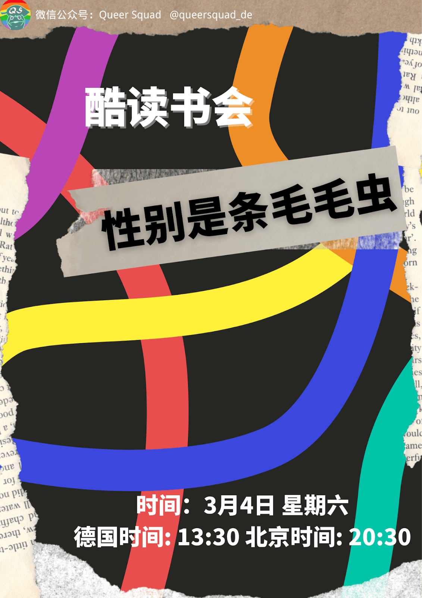
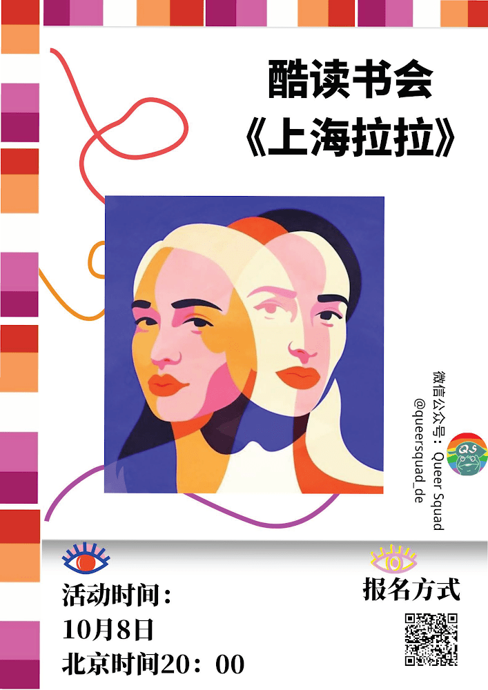

Filmvorführung & Gespräch
Feministischer/Queerer Aktivismus in China
-
Wir sind hier(我们在这里) | Shi Tou / Zhao Jing | 2015 | 58 Min | Dokumentarfilm | CHINA (VR) | Original mit englischen Untertiteln
Wie wird queerer Aktivismus/Bewegung in Festlandchina dargestellt? Und wie steht es um die feministische Revolution? Ende der 90er Jahre bis zum Beginn des neuen Jahrtausends gründeten eine Gruppe von Sozialaktivistinnen, gesellschaftlich engagierten Künstlerinnen und Wissenschaftlerinnen, die sich für Vielfalt und Geschlechtergerechtigkeit einsetzten, queere/feministische Gemeinschaften, um Frauen und sexuelle Minderheiten zu stärken. Sie bemühen sich, die Geschlechterhierarchie neu zu denken, die Identität von Frauen neu zu definieren und den Diskurs über Geschlecht/Sexualität neu zu gestalten. Jahrzehnte später spielen diese schönen Erinnerungen und wertvollen Erfahrungen eine bedeutende Rolle in der queeren und feministischen Geschichte Chinas, die Hoffnung und Licht der Freiheit ausstrahlen und den Weg für zukünftige Generationen ebnen.
-
Diskussionsrunde + Fragen und Antworten: Feministische/Queere Bewegung in China
In der Diskussionsrunde laden wir Dian Dian ein, um über die feministische und queere Bewegung in China zu sprechen, die persönliche Erfahrungen als feministische und queere Sozialaktivistin und Befürworterin der Geschlechtergerechtigkeit teilen wird. Das Panel wird sich auf die entscheidende Rolle und Bemühungen von Lesben in der sozialen Bewegung konzentrieren, wobei die prekäre Situation der Marginalisierung und Unterdrückung durch die heterosexistische, patriarchale Gesellschaft betont wird; wie sich die feministische und queere Bewegung in China von ihrem westlichen Pendant unterscheidet, insbesondere im Kontext der Globalisierung, und wie die Bewegung für Geschlecht/Sexualität in China mit Herausforderungen im gegenwärtigen sozio-politischen Diskurs konfrontiert ist.
Multiple Identities and Anti-Asian Racism
Nach der Filmvorführung haben wir eine kleine Paneldiskussion mit den Filmemacher*innen, Astride Velho (die Anti-Diskriminierung Beauftragte der HFF), Nicolas Vimenet (Verantwortliche für das kollektive Projekt "REACTAsie" der Association des Jeunes Chinois de France, AJCF), und Pei, die Co-Kuratorin dieses Programes von "Queer Squad" in Frankfurt, geplant. Diese Paneldiskussion wird in einem Hybrid-Format auf Englisch stattfinden. Die Filmemacher*innen und Nicolas Vimenet werden sich per Zoom einschalten und der Rest wird vor Ort sprechen.
Wir zeigen:
- Safe Distance (安全距離), Jamie Chi, 51min 17s, OmeU, 2021
- Sitting on My Face (Assis sur mon visage / 坐在我脸上), Guangli Liu, 14min 41s, Ome+fU, 2022
- Thursday afternoon at Cite Universitaire of Paris (Jeudi après-midi à Cité internationale universitaire de Paris / 周四下午的巴黎大学城), Haichuan Xu, 4min 38s, OmeU, 2021
- Bonus: Brumm, Brumm, Zhiwen Ding, 45s, Ome+dU, 2022
Nach der Filmvorführung haben wir eine kleine Paneldiskussion mit den Filmemacher*innen, Astride Velho (die Anti-Diskriminierung Beauftragte der HFF), Nicolas Vimenet (Verantwortliche für das kollektive Projekt "REACTAsie" der Association des Jeunes Chinois de France, AJCF), und Pei, die Co-Kuratorin dieses Programes von "Queer Squad" in Frankfurt, geplant. Diese Paneldiskussion wird in einem Hybrid-Format auf Englisch stattfinden. Die Filmemacher*innen und Nicolas Vimenet werden sich per Zoom einschalten und der Rest wird vor Ort sprechen.

Shanghai Queer
Auf der Suche nach den kollektiven Erinnerungen der LGBTQ+ Gemeinschaft in Shanghai zeichnet die Dokumentation eine faszinierende Erzählung und queer Landschaft in dieser Stadt, die sozialen Aktivismus zu Geschlecht/Sexualität, Gleichheit und Rechten, Erfahrungen und Begehren aus verschiedenen Perspektiven von Gelehrten, Aktivistinnen, Künstlerinnen darstellt, die sich in die queere Bewegung in der Transformation von städtischen Räumen einbringen. Durch eine Geschlechterlinse illustriert die Dokumentation queer-bezogene Themen und Basisaktivismus, der für LGBTQ+ Rechte kämpft.

2022 Vorführungen
kuratiert in Zusammenarbeit mit Riparian Showcase Hamburg.
Vorführungen:
- Ein Tag der Trans 跨性一天 | Yennefer Fang | 20min | 2020 | Dokumentarfilm | CHINA (VR)
- Online-Fragerunde und Diskussionsrunde nach der Vorführung zu medizinischen Regelungen für Transgender in Festlandchina + Fragerunde mit Hannibalz
- Madame 姑奶奶 |Qiu Jiongjiong | 120min | 2013 | Dokumentarfilm | CHINA (VR)
- Unsere Geschichte - 10 Jahre 'Guerillakrieg' des Pekinger Queer Film Festivals | Yang Yang | 42min | 2011 | Dokumentarfilm | CHINA (VR)
- Diskussionsrunde von Pei: Wie praktizieren wir queeren/feministischen Aktivismus außerhalb Chinas?
Leseclub
Queerfeministischer Leseclub: Gender Outlaw, Über Männer, Frauen und den Rest von uns
Feministischer Leseklub
Good and Mad: Die revolutionäre Kraft der Wut von Frauen
In diesem Leseklub möchten wir über die Kraft der Wut lesen. Es ist die feministische Bewegung und die Wut, die uns zueinander finden lässt. Um gegen Unterdrückung anzukämpfen, unsere Worte in die Tat umzusetzen und die patriarchalische Gesellschaft anzuschreien. Bleibt wütend, umarmt die Wut und den Zorn.

Queerfeministischer Leseclub: Shanghai Lala, weibliche Tongzhi-Gemeinschaften und Politik im städtischen China
Workshops, Meetups und Vorträge
Im gemeinsamen Trauern und Widerstand: Care Walk
Koorganisiert mit dem Feministischen Streikkollektiv Frankfurt am Main.
Queer/feministische Beziehungen sind von Trauer und Widerstand geprägt. Aus den Situationen, in denen wir uns befinden, entwickeln wir FLINTAs ein Bewusstsein für die spezifische Gewalt, die wir erleben; in Begegnungen miteinander lernen wir, unsere unterschiedlichen Situationen wahrzunehmen und sie in unseren queer/feministischen Kämpfen zu berücksichtigen. Unsere Sorge füreinander umfasst emotionale und materielle, soziale und transnationale Aspekte. Sie ist unbequem und bleibt in einer patriarchalen, kapitalistischen und rassistischen Welt unvollendet, die uns zwingt, uns mit internalisierter Unterdrückung auseinanderzusetzen und den sozialen Bedingungen zu widerstehen.
Der 8M Care Walk ist ein Spaziergang entlang von Orten, an denen wir kämpfen und lernen, uns sorgen und trauern, Widerstandsfähigkeit aus unseren Beziehungen zueinander entwickeln, uns gegenseitig kritisieren und die untragbaren Zustände mit unseren Versionen von queer/feministischer Organisierung kontern. (von FemStreik)
Experimentelle Performance: Chinoiserie Grand Gay Wedding von Yumo & Ziwei
Diese Hochzeit erzählt eine Geschichte von chinesischen Queers, die in der Diaspora leben. Diese Hochzeit verurteilt heteronormative Ehe, die Menschen auf Gehwomben, Geschirrtücher, Brustpumpen, Sexsklaven, exotische Szechuan-Gewürze und unheilige Jungfrauen des Patriarchats reduziert. Diese Hochzeit hinterfragt, was es bedeutet, wenn das Gesetz "Ehe für alle" sagt. Diese Hochzeit feiert freie Liebe, Freundschaft, Schwesternschaft, Einwanderer, eure europäischen Pässe und unser Chinesisches-Sein, das uns sowohl Freude als auch Schmerz bringt.


Workshop: Herstellung von Frühlings-Couplets
Lasst uns das neue Mondjahr 2023 mit unseren eigenen DIY Frühlings-Couplets feiern!
Workshop zum queer-feministischen Thema Frühlingscouplets basteln. Wir bereiten alle Materialien und Getränke vor! Macht mit und bastelt eure eigenen Frühlings-Couplets in diesem Jahr!!!
Workshop "Wer bin ich?" - Migrationsidentität
Kuratiert mit 德国派PIE.
Wie oft haben Ihnen Menschen gesagt, dass Sie sich in die weiße Mehrheitsgesellschaft "integrieren" sollen, oder fühlen Sie sich aufgrund Ihrer Hautfarbe, Nationalität oder politischen Ansichten "ausgeschlossen"? Manchmal befinden wir uns in der schwierigen Lage, angestarrt, befragt und repräsentiert zu werden; manchmal können wir den Weg zurück nach "Hause" nicht finden; manchmal müssen wir uns "beweisen", um akzeptiert und respektiert zu werden.
Im Workshop sind Teilnehmerinnen und Teilnehmer eingeladen, Identitäten und verwirrende Momente zu erkunden; Möglichkeiten zu finden und sie anzunehmen.
Community-Treffen Frankfurt CSD Pride März 2022
Umarme die Queerness und sprich für die Vielfalt der chinesischen Queers!
Identität: Wurden Sie schon einmal von kulturellen Unterschieden überrascht?
Identität scheint ein unvermeidliches Thema in der chinesischen Diaspora-Gemeinschaft zu sein. Identitätskrisen können nicht nur psychologische Konflikte verursachen, die sich in sozialen Rollen verlieren, sondern sogar eine Diskontinuität in der Persönlichkeitsentwicklung bewirken; es geht darum, kulturellen Schock zu bewältigen, Sprachbarrieren zu überwinden und die Spaltung zu überbrücken, die durch unterschiedliche Kulturen und Werte entsteht. Multikulturalismus bietet jedoch Diasporas tatsächlich eine Fülle von Perspektiven und Erfahrungen, die das Denken erweitern.
Es handelt sich nicht einfach nur um einen kulturellen Konflikt zwischen der "kalten weißen Person" und der "introvertierten gelben Person", wenn wir mit Herausforderungen und Problemen konfrontiert sind; vielmehr ist es eine Identitätsambivalenz (oder Konflikt?), die durch soziale und persönliche Entwicklung hervorgehoben wird. Für chinesische Diasporas könnte es eine neue "Ost-gegen-West-Debatte" sein. Wie kann man Antworten auf die Frage der Identität erforschen und wie kann man seine Rolle in der deutschen Gesellschaft finden? Jeder chinesische Diaspora-Körper ist sowohl Zeuge der "Identitätskrise" als auch Aktivist, der versucht, die Hindernisse zu durchbrechen.
Diese Veranstaltung zielt darauf ab, einen Raum für den Dialog für chinesische Diasporas zu schaffen, um unsere Erfahrungen und täglichen Praktiken zu teilen und über Identitäts"krisen" zu sprechen, die entweder "dramatisch" oder "natürlich" sind.